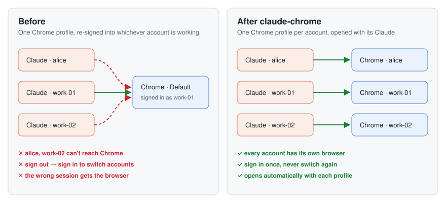

Claude in Chrome with several Claude accounts, each in its own Chrome profile
A small macOS script for people who run several Claude Desktop accounts side by side and keep finding Claude in Chrome attached to the wrong browser.
brew install lcbasu/tap/claude-chrome && claude-chromeIt gives each Claude account its own Chrome profile and opens that profile whenever its Claude launches. Profiles you add later are set up automatically. In each new Chrome window, two clicks are left to you: Add to Chrome, then sign the extension into that account.

Why it happens
This is what I observed in Claude Desktop's logs and code. It isn't documented by Anthropic and may change.
- A Claude Desktop instance started with
--user-data-dir, as multi-account launchers such as Claude Profiles do, logslocal pairing disabled for this launch: userData relocated. It then reaches Chrome only through Anthropic's hosted bridge, which matches by Claude account. - A Chrome profile has one Claude extension, signed into one account at a time.
- So sharing one Chrome profile between accounts means signing the extension in and out every time you switch.
Questions
Can I use Claude in Chrome with more than one Claude account at the same time?
Yes, with one Chrome profile per account. Each profile's Claude extension stays signed into its own account, and each Claude Desktop instance connects to the profile signed into its account.
Why does Claude in Chrome connect to the wrong Chrome profile?
A Claude instance can see every Chrome profile whose extension is signed into its account. If more than one is signed in and none is paired, or a different one was paired earlier, it can pick one you didn't intend. Pairing once with switch browser, then Connect, fixes the choice.
What does "local pairing disabled for this launch: userData relocated" mean?
Claude Desktop writes this when it runs with a custom --user-data-dir, as multi-account launchers do. In that mode it doesn't use the local connection to Chrome; it uses the hosted bridge, which matches by Claude account.
Why does Claude keep asking which browser to use?
More than one browser signed into the same Claude account is connected, and none is saved as paired. Pair once, or sign the extra one out.
Full documentation, source and tests: github.com/lcbasu/claude-chrome.